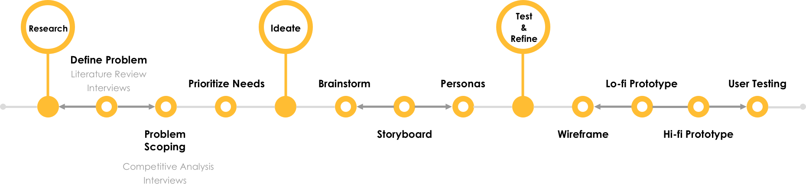

CookPal
A mobile app to help college students creating meal prep party and make meal prep fun and social activity.
Problem
36% of college students do not get enough to eat. 63% of college students said that sometimes they skipped meals.
Lack of time is among the most commonly reported barriers to meal planning. 35% of college students found that they did not have enough food to eat because they couldn’t get to a grocery shop.
The lack of cooking skills and diversity of food choice for meal-prep are also stopping college student preparing their meals.
Challenge
People enjoy not only the physical exercise but also the social contact between people from. However, gathering busy college students for a good cooking party and organize recipes and shopping list is difficult even with existing social media services.
Iterate for real needs
Cook Pal is a mobile app design of a semester-long solo project. I conducted the end-to-end research and design process. My design evolved along several rounds of iteration at different stages.
